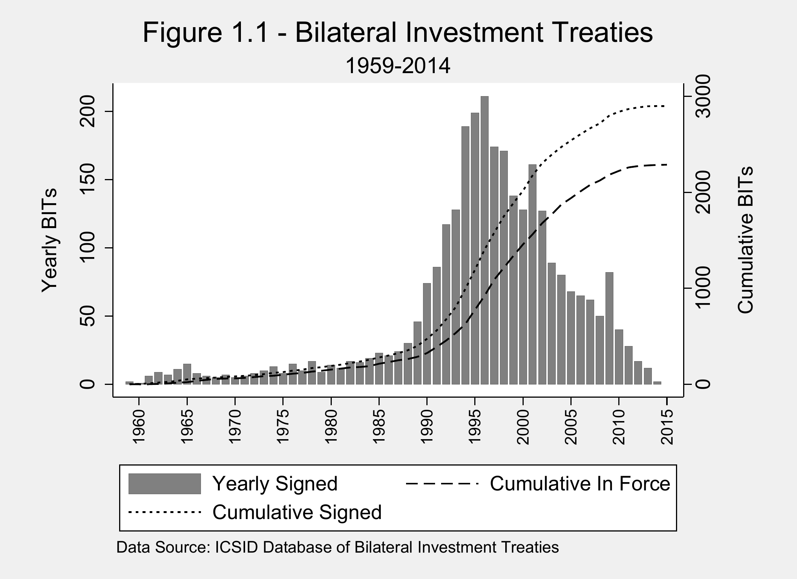
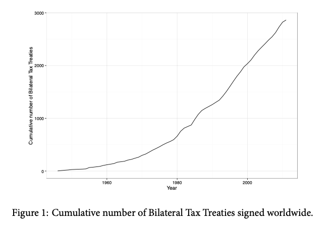
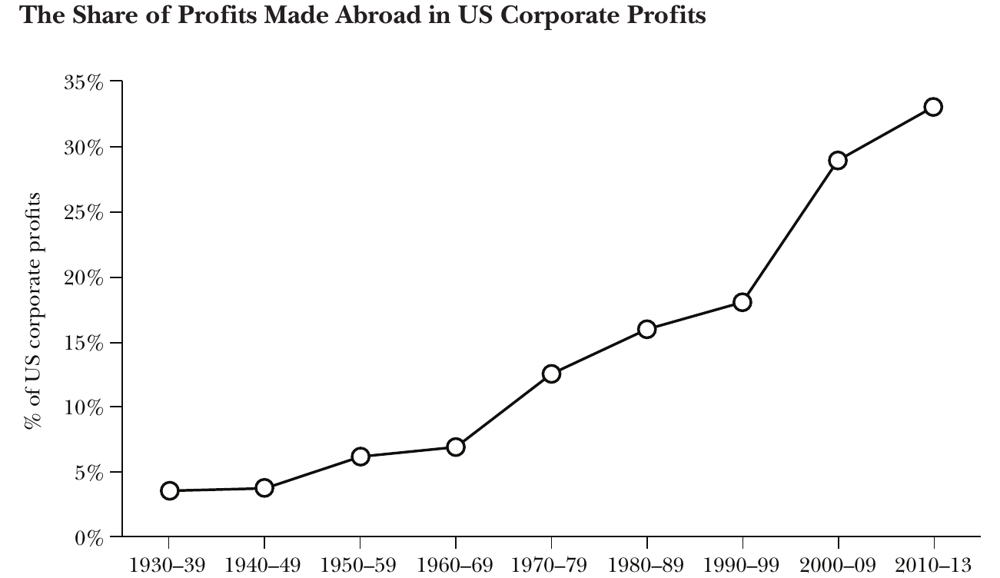
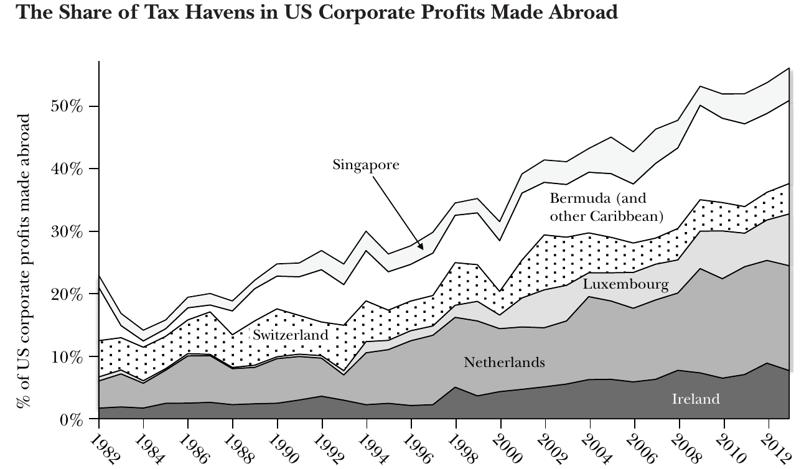
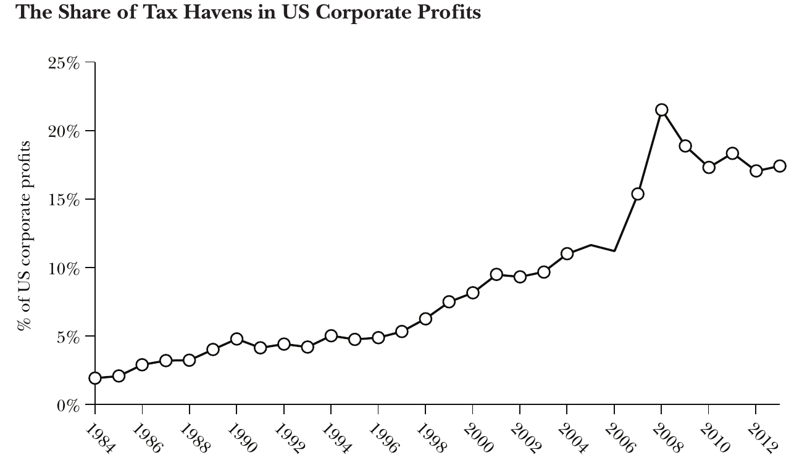
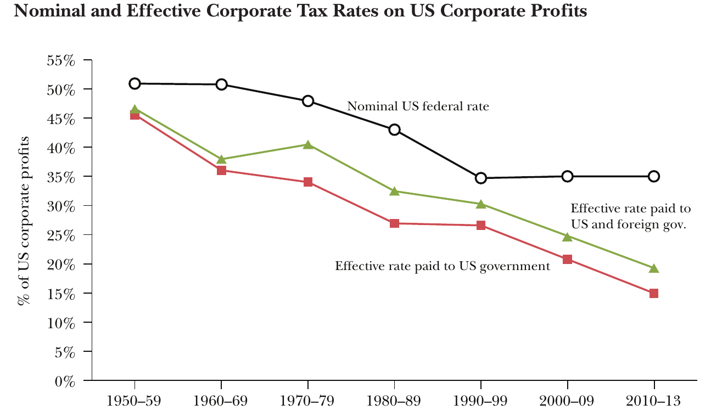
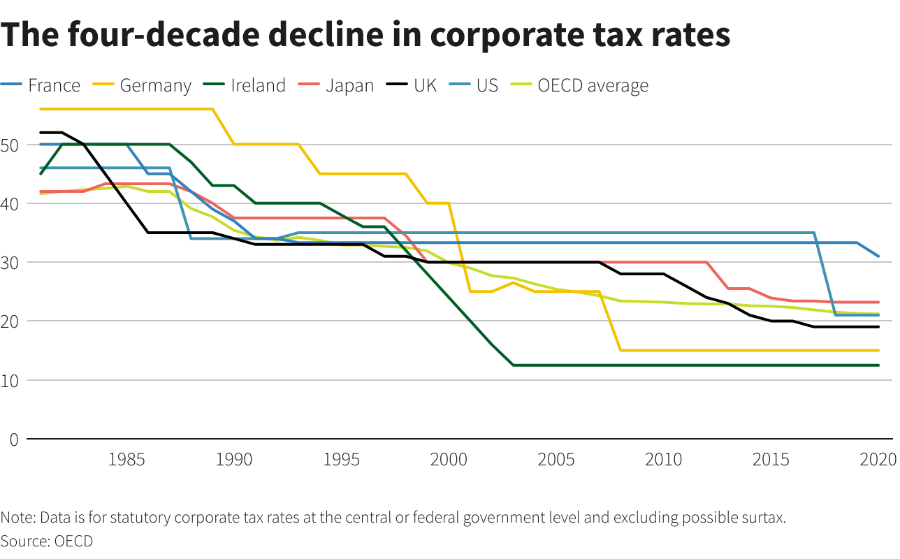

Global Business
INTL-I103 | Day 14 — Taxation, BEPS & Tax Avoidance
October 12, 2026
Today’s Plan
Today’s Big Question
Most corporate tax avoidance is perfectly legal. So why is it a problem — and can governments cooperate to stop a race to the bottom?
| Section | What we’ll cover |
|---|---|
| 1 · From investment rules to tax rules | The century-old rules of international taxation, and why globalization broke them |
| 2 · How profit shifting works | Where profits are booked, how firms move them, and a walk through the Double Irish Dutch Sandwich |
| 3 · Why governments cut taxes | Tax competition as a prisoner’s dilemma — we solve the game together |
| 4 · BEPS and the global minimum tax | How the 15% minimum tax works, and what has happened to it since 2024 |
From investment rules to tax rules
Two treaty webs


Same architecture: bilateral, written by capital exporters, protecting investors from host states — against expropriation (BITs) or double taxation (tax treaties).
The draft UN Code (1986, never adopted) already asked firms not to set internal prices “to shift the tax base.” What happens when the problem is double non-taxation?
Sources: Day 10 (BITs); Arel-Bundock (2017), Fig. 1; Jones & Rahmani (2025), Exhibit 2
The three pillars of international taxation

Source: Zucman (2014), Fig. 1
For half a century, foreign profits were ~5% of U.S. corporate profits — the 1920s rules barely mattered. Today they are about one-third.
Loophole: make profit appear to be earned where taxes are zero.
Loophole: transfer mispricing — and many internal assets have no market price.
Loophole: treaty shopping across inconsistent rules.
How profit shifting works
Where U.S. firms book their foreign profits


Source: Zucman (2014), Figs. 2–3
- 55% of U.S. firms’ foreign profits (~$650B, 2013) are booked in six places: the Netherlands, Bermuda, Luxembourg, Ireland, Singapore, Switzerland
- Taxes paid there: about 3% (BEA data; Microsoft’s 2014 10-K implies at most 3.1%)
- Havens now hold ~18% of all U.S. corporate profits — a tenfold rise since the 1980s
How do you move profit on paper?
Locate affiliates to exploit inconsistencies across thousands of bilateral treaties.
“Coffee Rio” overcharges its U.S. parent so profit appears in Brazil (25%), not the U.S. (35%). U.S. firms export to low-tax affiliates at low prices and import from them at high prices (Clausing 2003).
What were Google’s algorithms worth in 2003, before its IPO? Patents, logos, and code are rarely sold between unrelated firms, so there is no arm’s-length price to check against.
A low-tax affiliate lends to a high-tax affiliate; interest payments are deducted where taxes are high and booked where they are low.
Almost all of this is tax avoidance (legal), not tax evasion (illegal). It is also costly: General Electric’s tax department employed close to 1,000 people.
Source: Zucman (2014), pp. 124–127
The Double Irish Dutch Sandwich
Sources: Zucman (2014), pp. 124–126; diagram adapted from Arel-Bundock (2017), Fig. 3; Dutch filings via CNBC (2019)
Stateless income
| Tax authority | What it sees |
|---|---|
| United States (IRS) | Ireland Ltd. and the B.V. do not exist; Holdings is an Irish company. No U.S. tax until profits are repatriated. |
| Ireland | Holdings is Bermudian (“mind and management” in Bermuda), so it is not taxable in Ireland. Ireland Ltd.’s royalties are deductible. |
| Netherlands | Holdings is Irish, so royalties pass on to it without withholding tax. |
| France, Germany… | Google sells there, but its profit appears in Ireland. |
Ireland decided in 2014 to phase out the Double Irish; Google ended it at the close of 2019. The structure was legal throughout.
Sources: Zucman (2014); CNBC, “Google to end ‘Double Irish, Dutch sandwich’ tax scheme” (Dec. 31, 2019)
Who pays?

Source: Zucman (2014), Fig. 5
- 1998–2013: the effective tax rate of U.S. firms fell from 30% to 20% — about $200B a year; at least two-thirds of the decline is profit shifting
- Worldwide, corporate tax losses are estimated at $500–600B a year (UNU-WIDER)
- Winners: shareholders, and equity ownership is highly concentrated
- Losers: governments that fund public goods, and those who make up the difference — labor relative to capital, small firms relative to MNEs
Why governments cut taxes
A race to the bottom

Source: OECD, via Reuters
OECD average statutory rate: ~42% → ~21% in four decades. Ireland: 12.5% from 2003.
The puzzle: profit shifting costs governments revenue. Why, then, do governments keep lowering their own rates — and offering individual firms special deals?
The tax-competition game
| Payoffs: (A, B) | B holds its rate (25%) | B cuts its rate (12.5%) |
|---|---|---|
| A holds its rate (25%) | (3, 3)Revenue protected; investment stays put | (1, 4)B draws profit and investment away from A |
| A cuts its rate (12.5%) | (4, 1)A draws profit and investment away from B | (2, 2)No one gains investment; both lose revenue |
Your turn: what should A do? What should B do? Where do they end up?
Solving the game
| Payoffs: (A, B) | B holds | B cuts |
|---|---|---|
| A holds | (3, 3) | (1, 4) |
| A cuts | (4, 1) | (2, 2) |
Even if A and B promise to hold their rates, each gains by cheating on the promise. Without enforcement, an agreement is cheap talk.
Getting out of the dilemma
Sanction the defector. FATCA (2010) threatened a 30% withholding tax on U.S.-source income; Swiss, Singaporean, and Luxembourg banks agreed to report U.S. accounts.
Zucman: the U.S. could reform its corporate tax with “little to no international cooperation” — or, with the EU, impose tariffs on havens that refuse to cooperate.
A multilateral rule binds all players at once, rather than through thousands of bilateral bargains.
“The more havens agree to cooperate, the bigger the incentives for the remaining ones not to do so.” When Switzerland shares data with France, French evaders move to Hong Kong.
Which of these does the OECD’s global minimum tax use?
Source: Zucman (2014), pp. 136, 142–145
BEPS and the global minimum tax
From BEPS to a global minimum tax
CooperationDefectionAccommodation
BEPS fits Zucman’s first class of reform: harmonize the rules, keep source-based taxation and arm’s-length pricing. Pillar Two adds a floor.
Sources: Zucman (2014), p. 134; OECD; Saint-Amans (2026), Bruegel; Conference Board (2026)
How the minimum tax works
2nd: the parent firm’s home country
3rd: any other country where the firm operates
The firm pays 15% either way. The only question is which government gets the money — so Lowtaxia’s best response is to collect the top-up itself.
The minimum tax changes the payoffs
| Payoffs: (A, B) | B keeps ≥15% | B cuts below 15% |
|---|---|---|
| A keeps ≥15% | (3, 3) | (4, 1)A collects B’s top-up |
| A cuts below 15% | (1, 4)B collects A’s top-up | (2, 2) |
But: it is a floor at 15%, not 25%. Above the floor the dilemma remains — and competition can shift from rates to subsidies and credits.
The minimum tax in practice
First year (2024): $90–124B, 2.4–3.4% of global corporate tax revenue — below the $155–192B forecast. Little evidence of lost investment or jobs. 60+ jurisdictions have implemented it.
From 2026, U.S.-headquartered firms are exempt from the 2nd and 3rd collection steps; low-tax countries can still collect the top-up themselves. The U.S. applies its own 14% minimum, averaged across countries. Review by 2029.
A new safe harbor protects “substance-based” tax incentives. The OECD’s revised estimate: $91–155B a year. Without the backstop, low-tax states can again court U.S. firms.
UN Framework Convention on International Tax Cooperation: majority voting, led by developing countries. The U.S. walked out (Feb 2025). Next session: Nairobi, Nov 30–Dec 10, 2026; target: end-2027.
Did the United States defect? Is a floor with a hole in it still a floor?
Sources: OECD (July 2026) via Bloomberg Tax; OECD side-by-side package (Jan. 5, 2026); Saint-Amans (2026), Bruegel; Eurodad (2025); Tax Justice Network (Sept. 2026)
Key takeaways
- International tax rests on 1920s rules — source-based taxation, arm’s-length pricing, bilateral treaties — built to prevent double taxation; globalization turned them into channels for double non-taxation
- Profit shifting is mostly legal: treaty shopping, transfer pricing, and hybrid structures like the Double Irish Dutch Sandwich generate stateless income
- Tax competition is a prisoner’s dilemma: cutting is each government’s dominant strategy, so all end up worse off
- The 15% minimum tax changes the payoffs so cheating hands revenue to others — but the U.S. exemption reopens room to compete
Looking ahead
Wednesday (Day 15): Apple Must Pay 13 Billion Euros to Ireland in Back Taxes.
- Read the INSEAD case (Bennedsen, Henry & Stabile)
- Come able to define transfer pricing, arm’s-length vs. formulary apportionment, state aid, and the global minimum tax
- Keep in mind: why would Ireland fight to refuse €13 billion?
Questions?
See you Wednesday.

INTL-I103 | Global Business